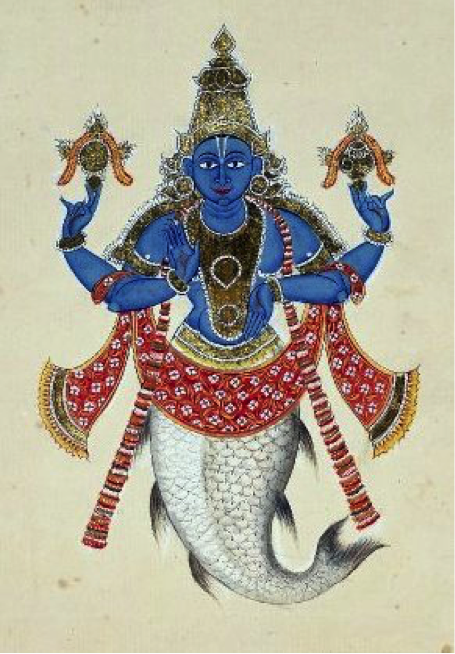

Beyond Sharkness: The Avatar that Therefore We Are
Sean Morey
smorey [at] utk [dot] edu
University of Tennessee, Knoxville
Abstract
This article will (re)open the possibilities for nonhuman animals to participate in rhetorical activities, particularly as fluid, networked subjects. Toward this opening, this article makes two theoretical moves. First, the recent work of Cary Wolfe frames the blind spots that manifest from traditional ways in which we define our relationships with nonhuman others, methods that allow humans to both grant some animals rights, yet kill billions of others. Second, theories of electracy by Gregory L. Ulmer provide an opportunity to consider the hyphenated-relationship outside of a literate metaphysics toward rhetorical strategies endemic to post-literacy logics of digital media. Digital media technologies—particularly through new networked subjectivities of “avatar” as theorized Ulmer—offer opportunities to consider nonhuman animals that “write” within complex technological networks. To situate these theories, the article examines the recent tagging and tracking of a white shark (Carcharodon carcharias), Mary Lee, by the research group Ocearch, a shark who presents a nexus through which to theorize some of these rhetorical interactions. By using Mary Lee as an object of study, this article will offer a counter to Wolfe’s legal frame toward a digital metaphysics of nature, a digital media category system that bypasses some of the blind spots that occur when theorizing traditional problems of the nonhuman animal (but necessarily creating new blind spots of its own).
Sharks are diverse at over 400 species, but most share similar characteristics—a network of traits that serve multiple purposes in regulating internal and external environments. For example, sharks’ cartilaginous skeletons are lighter than bones—helping them to stay afloat in the absence of a swim bladder—while also providing a flexible structure for graceful and powerful movement in the water. While sharks will sink if they do not swim, this downward dynamic is tempered by the cartilage as well as large, fatty deposits throughout the shark’s body. Urea, a waste product for most species, is stored within the shark to help offset osmosis in seawater (Smith). While most marine fishes must constantly drink water to stay hydrated, sharks retain urea to increase their ion count so that their bodily fluids exceed the ion concentration of saltwater. Furthermore, sharks have multiple rows of teeth that are constantly replaced (some sharks may lose 30,000 teeth in a lifetime), and their skin is made from dermal denticles, adapted teeth that not only provide protection from the outside environment and save energy by being hydrodynamic, but also provide external and internal structure, counteracting the flexibility of cartilage, balancing the shark system as a whole.
Within their external environment, sharks network and navigate based on a complex set of sensory systems. Sharks have good hearing and eyesight, and can see color. They have an excellent sense of smell. And beyond a simple sense of touch, the shark’s lateral line detects vibrations traveling through the water. Sharks can also sense electrical currents through a network of glands called ampullae de Lorenzini, perceiving as little as 1.5/1,000,000,000 of a volt, better sensitivity than most human-made voltage meters (Fields 78). These senses and other biological features help sharks to detect prey, navigate the seas, adopt a variety of behavioral and migratory strategies, and survive in nearly all marine environments, with a few species venturing into brackish and freshwater systems.
As fascinating as these shark facts may be, these are all scientific descriptions of sharks that are meant to categorize individual sharks into a multitude and group them by shared linguistic descriptions. However, at some point, the question of the shark, and all nonhuman animals, comes up against linguistic limits. This usually happens at one of two points (if not both). First, human language limits what the animal may be, either epistemologically and/or ontologically. On one hand, perspectives that deny the existence of nature outside of discursive construction—such as those explored by Sidney I. Dobrin and Christian Weisser in Natural Discourse—offer that we cannot know nature outside of linguistic epistemology, and so, any relationship that humans enter into with nonhuman animals is ultimately based on language. Even visual or material relations with animals are ultimately understood through discourse. Nature is categorically analyzed and created through such discourse, particularly scientific descriptions and categorizations into species. Certainly, this is also a way of knowing, but such words create a particular world that separates nature, leaving ecological methodologies and discourses to piece these parts together again.
William Cronon has argued that the concept of “wilderness” becomes problematic when we limit a “wondrousness” and “otherness” of nature to “remote corners of the planet, or…pristine landscapes we ourselves do not inhabit. Nothing could be more misleading” (116). This ontology of wilderness, such as in the legal creation of National Parks, promotes false and unhelpful constructions of a nature apart from human civilizations, and in a similar vein, such discourse further separates the human from the animal and is used as one of these criteria for separation. This is not new, for such arguments have been made by, among others, Jacques Lacan from a symbolic perspective and Noam Chomsky from a linguistic one. Even if, as Kate Rigby writes (working through Derrida), “nature comes after writing” (364) since it only comes about through writing, writing becomes even more “natural” as a way that nature should be understood. But, as Dobrin and Weisser argue, “There…can be no ‘natural’ characteristics of discourse” (167), even if writing seems natural.
As such, writing ties into the second point, which relates to the (in)ability of nonhuman animals to enter into discursive relations with humans. In Before the Law, Cary Wolfe notes that the classic argument against giving animals rights, or bringing them into a legal frame, is either 1) speciesism or 2) that they cannot reciprocate respect of those rights for others. This reciprocation occurs within the frame of language as laws function through speech and writing, and sure enough, only widely available to humans. As Aristotle says, “speech is what makes man a political being.” Such is the difference between rights, which we grant to some animals, and the right to have rights.
These approaches to understanding nonhuman animals are well-documented. Rather than summarize them all here, I want to twist the premise somewhat. This distinction between humans and other animals depends not on a single code, but on a network of codes, for the legal code relies upon scientific codes to make the species cut. Wolfe describes such codes as a framing technique that “decides what we recognize and what we don’t, what counts and what doesn’t; and it also determines the consequences of falling outside the frame” (Before the Law 6). So, how we understand our relationship to animals via language depends on the medium of language and not just a distinction between language and nonlanguage. As Wolfe notes in Animal Rites, and as Raúl Sánchez might distinguish through the term writing, “The distinction between language and nonlanguage is itself made within language; the cognition of figure and ground requires a frame, the separation of signal and noise, a code” (205). So, we have to ask, what language, what writing, what code(s) are we dealing with, should we deal with, when asking questions of the animal?
Or, what codes could we deal with? Traditionally, going back to at least Genesis and Leviticus, this has been a legal frame: not only what nonhuman animals count or do not count, and in what contexts, but also what humans may or may not do with them. Some relationships are codified, while others are not. In contending with legal questions of animals, Wolfe works exclusively within a literate medium: laws are based in definitions, essences, against which contingencies can be negotiated. Plato’s attempt at a defining dike, justice, further implicates law with literacy. However, when the medium changes to one of images and networks in digital media, within an emerging language apparatus of electracy, then new opportunities emerge for how we understand the subject. We can begin to ask about the kinds of relationships we might develop with animals that makes the literate ontological question less important. While we should certainly attend to Wolfe’s concerns, for we still exist in a society of laws, we must also be wary and attentive to how they persist or change based on different language technologies and the (emerging) logics of those technologies. Such identities of human and nonhuman manifest in Wolfe’s argument, but other identities exist in other frames, particularly Gregory L. Ulmer’s treatment of electracy. But before I take Wolfe’s argument in this direction, I want to introduce the subject of this discussion, Mary Lee.
Mary Lee
Off the coast of Cape Cod on September 17, 2012, the research group OCEARCH tagged a female white shark (Carcharodon carcharias) measuring 4.9 meters (16 ft.) long and weighing 3456 lbs (Ocearch.org). The group named this individual shark “Mary Lee.” As of this writing, her last data reading (Nov. 30, 2015), a tagged Mary Lee has been logged as having swum 25,729.638 miles, mostly along the east coast of the U.S., from Massachusetts down to northern Florida, with one excursion out to Bermuda and back. This current (Nov. 30, 2015) location is several miles offshore of North Carolina’s Cape Hatteras National Seashore, between Nags Head and Rodanthe (see figure 1).
OCEARCH is an oceanic scientific research outfit founded by Chris Fischer, who also serves as its expedition leader. The group primarily conducts “expeditions” for catching, tagging, tracking, and conducting biological studies of large marine species—particularly sharks—aboard its research vessel the M/V OCEARCH, which is equipped with a 75,000 lb. hydraulic platform on which the group lifts captured sharks out of the water for tagging, measurement, and sample collection. After about 15 minutes of this work, the sharks are then lowered for live release (see figure 2). The group also contributes to conservation and education outreach initiatives. Most notably, OCEARCH’s research data is open source, and it shares its tracking data live on its website and mobile app, allowing anyone with access to visit their “Shark Tracker” page and follow (both the tracks and social media profiles) of dozens of tagged sharks.

Figure 1. Track of Mary Lee through Nov. 30, 2015. Screenshot from Ocearch.org.
Figure 2. The OCEARCH team captures, tags, and releases the white shark “Mary Lee.” From YouTube user LiveScience.
OCEARCH researchers track Mary Lee via a satellite tag, an acoustic pinger, and an accelerometer they mounted to her dorsal fin. OCEARCH uses SPOT tags, or Smart Position or Temperature transmitting tags; the tag collects data as Mary Lee goes about her business, and whenever she surfaces within range of an ARGOS satellite, the tag transmits the data to the satellite which is then relayed to scientists and distributed via OCEARCH’s online networks.
OCEARCH’s work has been documented on the reality-TV show Shark Men, broadcast on the National Geographic channel. However, Mary Lee’s first major exposure came on January 8, 2013, when she was reported as swimming in the surf break off Jacksonville Beach, FL. Two weeks later, on January 22, 2013, she was once again reported as swimming close to shore, this time near Ocracoke, NC. In the Jacksonville case, law enforcement officials were made known of Mary Lee’s presence by Fischer, who monitors the locations of all the sharks that the research group tags.
Although the tag, pinger, and accelerometer collect quantitative data, this data is always qualified and networked with other kinds of data—psychic and cultural data that codes the electronic data. So, what kinds of data do the tags transmit in total, and how do we understand that data? We might first look at how Fischer chooses to respond to this data, particularly Mary Lee’s data delivered to him via text message on January 8. According to television interviews, Fischer received a text in the middle of the night notifying him that Mary Lee’s SPOT tag pinged a satellite. Her position: about 200 yards off of Jacksonville Beach. Alone, this particular bit of data is unremarkable until filtered through Fischer, who, sensing the possible danger to human beach-goers, calls the local sheriff in case law enforcement should deem it prudent to shut the beach down. Although this data is intended to be used scientifically, to understand the sharkness of Mary Lee, the data is already filtered through narratives of shark attacks, channeling the characters of Hooper and Brody from Steven Spielberg’s Jaws (1975), respectively, as the scientist convinces the sheriff of the shark’s danger to humans. In a very immediate, direct way, this scientific research seems to benefit the public, and from a conservation perspective, any non-encounter between human and shark is also beneficial for the shark because of such shark lore. But this narrative still plays into the kind of fear mongering that has contributed to a disregard for the need to protect sharks.
Despite this move, OCEARCH consciously sees itself as engaged in a rhetorical enterprise of repairing the image of sharks, and it sees the anthropomorphized naming practice as a rhetorical move to change how we perceive the shark. As ichthyologist Greg Skomal states:
They are beautiful names for beautiful animals and in giving them these nice names, we are also trying to change the image of the white shark. All too often we think of [a shark] as a horrible creature that wants to consume people—and it really isn’t. It’s a charismatic creature we should revere. (Crossan)
Besides adding a backdrop of cultural and narrative data to the data of location and time, OCEARCH also adds the human-imposed data of naming, which goes back to Adam’s naming of the animals, a key moment in a longer lineage that Lynn White, Jr. identifies as important for understanding how Western societies interact with natural environments and nonhuman animals. By replacing individuals of nonhuman nature, which had their own individual spirits (pagan animism), with categorical species names (Adam via Judeo-Christianity), it became “possible to exploit nature in a mood of indifference to the feelings of natural objects” (1205). OCEARCH’s practice of individualizing would seem to be a good thing, then, looking at singular animals in addition to species, working against the typical conservation approach that is often willing to sacrifice the individual to save the many (of course, Mary Lee does undergo a traumatic event as a sacrifice). But to the extent that Mary Lee is named after Fischer’s mother, can she ever be an “individual?” I am unsure what kind of revering is going on, as the psychoanalytic readings seem numerous. For now, I have to leave this to your own imaginations. But other sharks, such as Lydia, have been named after other “parents,” particularly corporate sponsors like Caterpillar (a legal person), whose products (e.g., bulldozers and earthmovers) have been symbolic of environmental devastation, such as their presence in Edward Abbey’s The Monkey Wrench Gang, which the protagonists routinely sabotage at every opportunity. This corporate naming seems simply to be a reterritorialization of nonhuman individualization. Altogether, then, this data cannot be neatly confined to understanding Mary Lee according to a literate essence (i.e., Carcharodon carcharias), nor necessarily as an individual nonhuman animal.
If Fischer’s call does play right into the kind of fear-mongering about sharks that many ichthyologists try to mitigate, as if he were placing a call to Sheriff Brody, then does this leave the shark open to attack, making the call counter-productive? On one hand, the public has an interest in Mary Lee’s whereabouts; on the other hand, does Mary Lee have a right to privacy? This question is a bit ridiculous, and a bit rhetorical, but perhaps only ridiculous going back to Wolfe’s frame for how we interpret such data. Although it may seem reasonable to fear a shark attack, the overall odds are illogical. But shark attack data is usually interpreted through an emotional filter—what the law, both legal and scientific, tries to avoid when making decisions of guilt or innocence, inclusion or exclusion, based on facts and statutes.
Observationally, this tagging produces some original results that can certainly help scientists understand the behavioral patterns of this keystone predator, which can lead to better conservation measures. For example, Lydia has become the first shark “witnessed” to cross the mid-Atlantic ridge, documenting a cross-ocean migration. But besides the empirical results on which scientific analysis and discovery often depend, the data produced by this fusion of shark and digital technologies signals something else. The data that OCEARCH collects is not only transmitted to its researchers, but to the public at large, most extensively through their website, but also through social media platforms such as Facebook, Twitter, YouTube, and Instagram.
Every time Mary Lee surfaces and her digital augmentations ping a satellite, the data of location and time are shared and charted for public consumption. This appetite for sharks pushes up against another form of linguistic limits, the literary shark that comes to us through journalism, literature, and art. While sharks appear in many mythologies, they first began to haunt modern American consciousness in 1916 with a series of shark attacks along the New Jersey shoreline. Prior to these attacks, sharks were not anchored with the man-eating reputation they later received. Instead, scientists and the press attempted to downplay the fact that the first attack on Charles Vansant in Beach Haven was even a shark. The New York Times wrote that Vansant “was badly bitten in the surf…by a fish, presumably a shark” (“Dies After Attack by Fish”). This excerpt places the term “shark” as an afterthought to the larger category of fish. In fact, the title from this article, “Dies After Attack by Fish,” does not even contain the word “shark,” which would most likely be the first word in a contemporary article, and was the first word in the headlines for the second 1916 attack. For as Michael Capuzzo writes in his account of the 1916 attacks, these shark encounters would eventually prove to produce a panic “unrivaled in American history…sweeping along the coasts of New York and New Jersey and spreading by telephone and wireless, letter and postcard” (269). These encounters prompted mass panic and calls for the eradication of sharks from the sea, ushering a change from the shark as just a large fish to something post-fish, beyond fish, setting up the shark for its transformation in Peter Benchley’s Jaws and subsequent cinematic treatment by Spielberg.
In literature, some of the most thorough descriptions come from Herman Melville. In Mardi, Melville describes, characterizes, and anthropomorphizes a variety of shark species. The brown shark is the “sea attorney;” the blue shark is a “dandy;” the tiger shark has a “rude, savage swagger;” and of course, we meet the “ghastly White Shark” (37). But the narrator relays these descriptions from the sailors he has met and tempers them with his own estimate: “As well hate a seraph, as a shark. Both were made by the same hand” (37). Of course, one may still “dislike” a white shark, even if it is wrong to hate. Through these descriptions, the narrator balances perceptions of sharks.
The story that inspired Moby-Dick, that of the whaling ship Essex, tells another more complicated relationship with sharks than viewing them as devilish fish, although there is this portrayal as well. After a sperm whale sinks the Essex, forcing the crew into the remaining whaleboats, one shark is described as attacking one of these smaller boats, placing it in a predatory frame. However, most descriptions tell of men trying to catch sharks to eat, casting them as prey—a necessary food source for the starving castaways—rather than as predators. The men come to view their attacker as a potential meal: “If they could kill this giant shark, they’d have enough food to last them several weeks” (Philbrick 161), and later “Attaching pieces of their dead shipmate’s bodies to a trolling line, the survivors managed to catch enough sharks to sustain themselves until their rescue” (Philbrick 175). Here, man and shark are put on a rare plane of equivalence, where they are both depicted as predators and prey, sometimes quasi-cannibalistically (for not only did the crewmen use dead sailors as bait—they also ate their dead and sometimes sacrificed the living for food).
Although these descriptions of sharks range between devil and seraph, predator and prey, they still fascinate readers as a source of entertainment, and these early tales become prototypes for the later entertainment spectacle through which they are consumed, a strategy we have tried to adopt when contending with a sublime fascination of sharks at least as far back as these sea yarns, if not also in paintings such as Winslow Homer’s The Gulf Stream or John Singleton Copley’s Watson and the Shark. That is—to return to OCEARCH—even though scientific data related to Mary Lee as Carcharodon carcharias is used in the discourse of species, the satellite tag also enters and maintains Mary Lee within an affective network that ties into the emotional responses provoked by white sharks and sharks as a whole. Her tracking is another way to enter the shark into public spectacle.
While Fischer’s main goal is shark conservation, only tangentially aiding public safety, officials in Australia have taken the social media surveillance of sharks a step further, programing the tags on a series of white sharks to send a tweet every time they approach certain geographical coordinates. These networked sharks no longer emit a “ba-dum” but a “ping-tweet” as their movements trigger their digital augmentations to ping satellites and post their whereabouts in Twitter feeds. Although, to some extent, these moves cast sharks as individuals, these individuals exist within larger networks (and on larger networks). Mary Lee can be identified within a matrix of Fischer’s mother, Facebook profile, Sheriff Brody, reality-TV, Twitter hashtag, Instagram photos, and more. Furthermore, we have pushed her biological hybridity in other forms through films such as Sharknado, Sharktopus, Mega Shark vs. Mecha Shark, Avalanche Sharks, and of course, Saturday Night Live’s land shark. While I claim that we need to reimagine new ways to approach nonhuman animals, an imagination for new kinds of sharks has been well underway even before Mary Lee was satellite-tagged, after which she is continually tagged and consumed online for a variety of motives and purposes.
Mary Lee has already been mined for physical data, and she is currently being mined for behavioral data. As a being with a satellite tag and acoustic pinger, she delivers digital data to Fischer and the general public. But at what point, if any, does Mary Lee start to push the boundaries of Carcharodon carcharias and become a digital shark in her own right, a post-shark? And how do we understand that identity and post-ness, particularly if we want to begin thinking of Mary Lee outside of Wolfe’s legal codes toward something else? Perhaps a problem is how the data is processed and analyzed, especially since this data crosses disciplinary borders. A different processing model might be in order, as Gregory Ulmer writes:
One of the obstacles to problem-solving in the information age is the knowledge explosion itself. We are buried in data which by its sheer quantity impedes comprehension. Moreover, having tended to concentrate more on data processing than on understanding, we are in need of some new ideas. (Teletheory 204)
Scientists certainly collect data from these sharks, but the sharks themselves now have a certain amount of digital agency in their data submission, even if they are unconscious of the fact that they are tweeting at all or of the tools that allow them to do so. Still, these sharks, to however small an extent, have abilities they otherwise would not, pushing them into kinds of sharks that have not existed before, challenging the sharkness of their sharkness. As Donna Haraway might argue, the satellite tag on Mary Lee does not just mediate her data for us, but fundamentally changes what she (and we) become: “technologies are not mediations, something in between us and another bit of the world. Rather, technologies are organs, full partners in what Merleau-Ponty called ‘infoldings of the flesh’” (249). Although Mary Lee might not be fully aware or intentional with her new organ, concepts such as “agency” are now infolded between shark, technology, and human, and so actions ascribed to Mary Lee should be read beyond those we would normally attribute to a shark.
Some of these infoldings can be found in other combinations of species and organs at the cellular level, mainly through biogenetic attempts to synthesize or converge species. The OncoMouse, explored in detail by Haraway, was created by Harvard scientists to be susceptible to cancer and patented by DuPont. Here, the animal is legally (thus literally) a thing to be owned. Other cellular combinations exist, notably cross-speciation through Genetically Modified Organisms (GMOs), but also animal-based combinations, such as bio-artist Eduardo Kac’s glow-in-the-dark bunny Alba, or the creation of web-spinning goats by inserting spider genes into a goat so that it produces “silk milk,” or a milk with proteins found in spider webs that can then be milked out and turned into “Biosteel.”
While these animals create new kinds of species crises often solved by simply patenting the animal into a corporate product (so that the animals are clearly a commodity and not life per se), they provoke a different—though related—set of questions than that of the technologically-grafted animal, which becomes networked to humans through different systems. Genetically, the sharks that OCEARCH tags are still “sharks.” As such, these sharks require a new framing to make sense of their data output and identity, their new infoldings, not to replace their scientific essence, but to understand how to relate to them in a post-shark digital environment, one that spans between watery and electrical flows. For Mary Lee’s data is more fluid about what she “is,” if this ontological question is important. What is important is how to solve the complex problems that circulate around and through sharks, problems that range from overkilling for the fetishized fin, to the fear of the shark, to campy jokes, to scientific research—all of which contribute to a larger networked shark that includes more data than simply a categorical essence. Rather than sticking with the binary of human/nonhuman in how this data becomes filtered, perhaps another approach is to explore emerging forms of identity that do not directly depend upon the law, either legal or scientific, for validation. We might network her identities in a way that would—if not produce immediate material effects for how we interact with sharks—at least spark an imagination of new relationships.
Avatar
Several theories could address Haraway’s assessment of the relationship between bodies and technologies. Bruno Latour’s Actor-Network-Theory is one method for reading this changing dynamic (Haraway herself references Latour’s theories of “thing”), as well as Graham Harman’s approaches to object oriented ontology, Thomas Rickert’s concept of ambience in Ambient Rhetoric, or Dobrin’s theory of saturation in Postcomposition. Mary Lee should be read in such ways, and these analyses would fit well with Don Ihde’s observation that “Insofar as I use or employ a technology, I am used by and employed by that technology as well…We are bodies in technology” (137). Haraway offers that in such technologically-coupled relationships, “The animals make demands on the humans and their technologies to precisely the same degree that humans make demands on the animals” (263). Although these strategies link, network, and saturate agency and action throughout a network or ambient environment, they do not necessarily change how the shark might be identified beyond either its species or individuality (albeit now singularly connected). That is, its essence as shark changes mainly according to how it fits into a larger network, but the frame does not necessarily change beyond a categorical or legal positioning. A shift in focus does not necessarily negate a previously-established framing. Perhaps a whole new story needs to be told. We need to question the identity of the shark from a lens of electracy rather than a frame of literacy.
In distinction to the language apparatuses of orality or literacy, Ulmer posits that electracy names the emerging language apparatus driven by the writing technologies of the ubiquitous image and digital Internet. From media studies, a language apparatus is composed of the writing technology, institutions that help shape that technology’s practices, and also individual and collective identity formation that arise from these interactions. The individual identity for an oral apparatus was the “spirit,” while the apparatus of literacy developed the “self,” or an individual will that can make rational decisions based on self-interest. Such identity formations have been noted by other grammatologists, such as Walter Ong, Eric Havelock, and Brian Rotman. Within electracy, new identity formations will emerge as writing technologies change and new practices are developed, providing new mediums through which these identities become composed. Although these new identity categories are still in flux (and may be for centuries), Ulmer identifies one emerging identity category as “avatar.”
As a basic definition, an avatar can simply mean the graphical representation of a user’s online persona or alter ego in a game. It can be constructed as a two-dimensional icon, a three-dimensional figure, or even exist as primarily text-based. But the term has a richer history that lends insight to this kind of identity formation. The word’s origin derives from Hinduism (Sanskrit: avatāra) and means “descent,” specifically referring to the descent of a deity into terrestrial form—the incarnation of a god into an earthly body. In Avatar Emergency, Ulmer offers that our psychic being descends, or uploads, into our online avatars, creating a new form of individual identity as “we put our self into the prosthesis of the Internet” (xi). Avatar is not just an image, not just a branding of ourselves, but a new category of being-in-the-world. For Ulmer, “Avatar is to electracy what ‘self’ is to literacy, or ‘spirit’ to orality” (x). If animals were once thought to have spirit, then perhaps it is not so far-fetched to consider animal avatars.
Mary Lee, through her networked web presence, data, and images, becomes avatar. For what is an avatar except a mobile image through which meaning passes to the surrounding environment in which it is located? And while this might seem to place Mary Lee as even less than animal in terms of Wolfe’s argument, perhaps a new understanding of “animal” can develop, or perhaps the distinction between animal and human can be erased once they are placed in this relationship. Doing so would reframe this conversation further, as the identity that occurs with becoming avatar is no longer a literate self. For the upshot is, rather than categorizing, which derives from the Greek word “to accuse,” within a discourse of speciesism that is also a discourse of law, we now have a one-to-one relationship between animal/image.
The white shark is perhaps uniquely suited toward this new digitally-augmented reality. Its own long-range sensations are dependent not on the analog, but on the digital, picking out a bit, a molecule of blood from a million drops of water, a quarter-mile away. Again, from long range the shark detects movement not from the vibrational waves of its prey, but electromagnetic pulses from the prey’s nervous system. As noted in the introduction, this extra sense is provided by the ampullae de Lorenzini, electroreceptor organs that trace Mary Lee’s head and lateral line. Again, working on a small scale, white sharks can detect a voltage much less than a beating heart. With a variety of other sensory and transmittal technologies attached to her dorsal fin, Mary Lee must be aware of this digital transcription device, even if she does not know how to use it. Is she aware of her avatar being transmitted? Probably not. Her senses only carry meaning within the medium of water, not air and space. But the data that Mary Lee provides—unknowingly—to the scientists creates a new reality for the scientists who pour over the data and adjust their understanding of essentia over accidentia, of their illusion of physis over nomos, despite the accidental mode of naming the sharks. However, such shifts in a scientific reality also shift and augment the shark’s reality.
The satellite tag on Mary Lee’s dorsal fin opens up a wormhole to another environment that she cannot see as she writes herself onto online maps and enters into new relationships with far removed environments that can nevertheless feedback into her environment, for good or ill, as new laws and scientific theories are written based on her own feedings. And these feedback loops are not closed, but as diagramed by Mary Lee’s avatar, what Mark Taylor identifies as Douglas Hofstadter’s strange loops, loops that are self-reflexive circuits. Strange loops appear to be circular, but remain paradoxically open (75), and what this shark “is” remains open because “is” is the wrong question, one suited to science via literacy. Mary Lee’s avatar is always shifting depending on how her data is combined and rearranged, for as Mark C. Santos et al. write,
An avatar’s agency is contingent upon its place within a network: like a player in a game, it is neither powerless nor autonomous. An avatar is always at work within a larger system yet retains the ability to change that system…Ulmer’s avatar frames selfhood as a messy conglomeration of body and mind engendered and sustained through networks. (“Our [Electrate] Stories”)
Tagging a shark might be seen, in Wolfe’s words, as “utterly continuous with the technologies and dispositifs that are exercising a more and more finely tuned control over life and ‘making life’” (Before the Law 96-97). But regardless of how it is created, Mary Lee’s avatar exists, and it is neither powerless, nor autonomous. The avatar requires Mary Lee as much as she requires the technology, the tag, to broadcast to the Internet. Avatars exist in networks as sharks exist in water, but both of these environments are necessary for this particular avatar to exist. And long-term, this avatar may need to exist so that Mary Lee and her lineage can exist. In this networked composition of meaning, we need to ask, to the extent we grant (or deny) animals literate constructions of selves, what effect, what new meaning is created through a parallax view of the shark, a logic of two, once we think about and with the shark through both physical body and avatar?
This ultimately gets us back to Wolfe, but in a different frame. His questions and concerns do not disappear, but change meaning with a change of language apparatus. For although he is working within literacy, we can still accept Wolfe’s charge that “What is needed, then, is another thought of the biopolitical in which human and nonhuman lives are deeply woven together de facto even if, de jure, they ‘politically’ have nothing to do with each other (and how could they, if animals are ‘things’ and humans are ‘persons’?)” (Before the Law 48, emphasis in original). Rather than think of the relationships between humans and nonhuman animals as tied to individual essences that are woven together but still apart, the networking of humans and Mary Lee creates a situation where bodies may remain physically separated but can no longer be thought of as individuals. That is, a hybrid identity is formed where human and nonhuman are tied together in a single (but shifting) identity of avatar. If animals were once thought to have spirit—and more recently, as Wolfe has discussed, selfhood in the context of the legal system—then animals might now have avatars, new identities that are shared with humans that are co-constructed with the actions and technologies of humans. When human and shark are connected by networked bars, it becomes difficult to determine who is filtering the data, what is unified, and by whom.
As Wolfe ultimately contends, we cannot simply embrace “life.” We have to choose, and we cannot choose everything at once. And thus, biopolitics should not be concerned so much about where to make the cut between Great Apes, to which the Spanish Parliament has recently given rights, or the billions of animals killed each year in factory farms. Instead, he offers a third way that is “no longer ‘human’ vs. ‘animal’; the biopolitical point is a newly expanded community of the living and the concern we should all have with where violence and immunitary protection fall within it, because we are all, after all, animals before the law” (Before the Law 105). And we might also contend that, for grammatologists like Walter Ong, Marshall McLuhan, and Ulmer, humans and animals were all spirits before literacy. In electracy, new possibilities arise for identity formation, the avatar being only the latest. Within this network, we see such weaving of expanding communities begin to happen for Mary Lee.
Perhaps, then, the stake of animals having avatars is related to Wolfe’s questions of how we get to a point where we enter into a new relationship with the animal. And perhaps to get at Wolfe’s questions and concerns we have to write beyond nature as such, and we have to imagine a nature beyond writing as such. This image category does not take on the status of a categorical icon toward essentia, but of accidentia, a particular rather than a universal. While Mary Lee does not have the same level of avatar that most humans do through Facebook, Twitter, or online gaming, she has the networked trappings of one as she becomes co-composed with other networked agents of fishermen, scientists, site visitors, Web robots, and others. She, like all avatars, becomes a networked subject at the same time as she is a medium, writing herself as she is written about. And perhaps, this is a start toward breaking out of a literate frame.
Although we cannot prove that animals have any idea of the information networks that surround them, of the electric field that surrounds Mary Lee once she is plugged into the system, neither can we prove that she is not aware, that she is not changing her behavior. This is not simply a nod to the Heisenberg’s uncertainty principle; given that white sharks have sophisticated electrical senses, such observation may be influencing her in undetected ways. Nor am I suggesting that we should suddenly give her rights or remove the technology from her body, if that were even possible; nor am I saying that we should technologize every living being, although to reject this out of hand leans toward a nostalgia for a nature free of human hand (itself a myth). Instead, I only want to raise the point that as networks become more fluid, open, and are opened to nonhuman nature, we have to be open to the probable eventuality that categorical essences will change, loopholes will form, and subjectivities will shift, including those of nonhuman animals. We can close these loopholes, trying to logically retrofit new technologies for old categories, or old categories for new technologies, or we can actively develop new approaches that include Mary Lee and other emerging identities. Perhaps Mary Lee is crashing stock markets as she crashes schools of baitfish. Yet this isn’t even the point. The point is that how we perceive the data of the shark determines how we interact with it, and if we perceive the sharks as having an avatar, an online presence as many of us do (though this digital access is not available to everyone), then perhaps we can reimagine relationships with nonhuman nature that can better address affective, ethical, and even legal questions.
Receiving Measure
“What is the experience of becoming image online?” Ulmer asks (Avatar Emergency xi). It is not simply a digital transference of light into pixels that are copied and distributed ad infinitum. The experience for electracy is analagous to what the self is for literacy, a completely new way of understanding one’s being. “The electrate equivalent of ‘voice’ is not just ‘image’ but ‘avatar,’ with the difference being that avatar is an expression you receive, not one that you send” (Avatar Emergency xi). It seems highly dubious that the shark receives avatar as humans do, but it still receives something, some new way of being understood and acted upon in the world that it did not experience before. That is, if literate laws affect how an animal receives based on its literate identity (protection, abuse, death, torture), then an electrate identity alters this reception, even if this identity is not self-selected (or co-constructed, in Mary Lee’s case). This reception includes humans and animals, which both receive avatar differently than selfhood (or specieshood). Even if we follow Heidegger that animals are poor-in-world, then a networked nonhuman animal may be less poor as avatar than as thing.
But the experience of Mary Lee becoming avatar is much different than that of a human’s, and returning to Santos et al., we must be mindful of the material aspects. In one sense, we must be mindful of an everting network. As Steven E. Jones writes,
Nowadays, it feels as though the digital network is breaking through to the physical world, to the everyday physical dimension in which we live, as if through cracks that have opened in the fabric we once believed separated the mundane world from cyberspace. The result is irruption, eversion, a new mixed reality in progress, still haunted by the earlier metaphor of different dimensions. (48)
If an older model of cyberspace required our minds going into the Internet, the Internet now comes out, or everts, to our bodies, or at least a synthesis of the two results. Toward the integration of the body with digital information, electracy “proposes that direct access to databases must be through ‘mindbodies,’ engaging mappings among orifices, brain, culture, and technics” (Avatar Emergency xv). The video in Figure 2 shows the OCEARCH team networking the shark through the technics of scientific instrumentation, probing existing orifices and making new ones with power drills, creating new kinds of mindbodies, a different kind of eversion. This video depicts the measurement of shark as species without accounting for other kinds of measurements that must be taken. While scientists measure length, weight, and collect samples for other testing, the shark exists within a larger culture of shark that equally affects the measurements of sharks (such as the total number of sharks), and also the emotional reactions to sharks, the measure of response to dealing with them. What is reasonable, and what is obscene? To measure sharks in only one way risks missing other (un)measured responses to sharks that might occur (and have occurred). In 2014, there were three fatal shark attacks on humans worldwide; if consistent with prior years, there were over 100 million fatal human attacks on sharks (“ISAF 2014 Worldwide Shark Attack Summary”).
In discussing the film Avatar, the scene that most informs Ulmer’s concept is not Sully as avatar, nor the Na’vi plugging into the Tree of Souls (Vitraya Ramunong), but the scene in which the spiritual Woodsprites (Atokirina) gravitate toward him. As Ulmer points out, in achieving the 3D technical triumph of the film, floating in the space between actors and audience, the technology of parallax was required for 3D viewing, viewing two images at the same time, “slightly displaced one from the other.” This double perspective provides an important characteristic of avatar: “The thought of avatar must sustain this parallax dimension, supporting the emergence of a third quality out of a logic of two” (Avatar Emergency xii). Human and shark are not to be joined as such into one body, but both maintained together in thought, seen together in one view. They are not individuals as such, but neither are they fully integrated.
One way to understand this dimension is to ask what this parallax view reveals. Ulmer often explains this viewpoint in terms of a structural portrait, where each individual’s personal situation (or disaster) provides an “existential metaphysics” (Avatar Emergency 242). So we might read that Mary Lee in her situation is analogous to us in ours. This could be understood as each organism’s attempt to strive within its own being (Spinoza’s conatus), each having a right to do so, temporarily bypassing the need to structure this relationship with literate rights through an affective connection. But Mary Lee might also provide a view that makes one realize that we, in our situation, are analogous to her, in that many humans are continually probed and tracked for their data, perhaps even more unaware of this than she is of her own body as database (although it’s arguable, and probably impossible, to determine her level of awareness).
The current lack of parallax, of becoming avatar, is perhaps seen in the relationship between two recent stories related to literate constructions of selfhood and the lack of measure. In one case, a crested black macaque snapped a selfie when wildlife photographer David J. Slater stepped away from his camera, leaving it unattended on its tripod. Several of these critically endangered macaques grabbed the camera and began playing with it, taking pictures in the process (intentionally or not). The most viral of these selfies was made by a macaque named Naruto. Who owns the copyright to the photo? While this question was initially raised after the photo circulated, it was brought to court by People for the Ethical Treatment of Animals (PETA), who filed a lawsuit on behalf of Naruto, arguing that he owned copyright. PETA attempts to use the literate language of the law to situate the “personhood” of Naruto, granting him rights that have so far been only granted to humans. As they argue in their suit: “While the claim of authorship by species other than homo sapiens may be novel, ‘authorship; under the Copyright Act, 17 U.S.C. § 101 et seq., is sufficiently broad so as to permit the protections of the law to extend to any original work, including those created by Naruto” (Yan). By adopting this strategy, PETA invests Naruto in the very discourses that are denied to him and in some ways keep him confined to a particular topos, whether it is simian, Macaca nigra, endangered species, monkey, or other terms, some of which may help Naruto navigate various legalities.
Beyond selfies, Steven Wise has been making the case that nonhuman animals should be granted a broader set of rights. As he argues through the Nonhuman Rights Project, which he founded, as well as his books on the topic, the key to helping nonhuman animals is to grant them legal personhood and no longer see them as things. As Wise offers on representing animals in court, “I saved a handful from death or misery, but for most, there was nothing I could do. I was powerless to represent them directly. They were things, not persons, ignored by judges” (5). As noble as this approach may be—to put all animals on the same legal footing—the strategy ultimately falls back into the strict linguistic limits of legal discourse explored by Wolfe. From another perspective, however, the events that precipitated from Naruto’s act have circulated via multiple networks, moving beyond such limits, as the initial stages of writing an avatar might. It should be noted that the more widespread common name for Naruto is “Celebes crested macaque,” and he begins to become a celebrity and author his own avatar.
A second story, working against the perception generated by Jaws, reports that more humans died last year while taking selfies than from shark attacks. As Harry Readhead writes, “People have tumbled down the steps of the Taj Mahal, fallen off bridges and been electrocuted in an effort to take the perfect selfie.” Again, there is the need for measure, not only in the reaction against sharks when encounters do happen, but also when attempting to create an identity based on image. As Readhead sums up: “The moral of the story seems to be not only that fatal shark attacks are far less common than you might think, but to think twice before you do something reckless in the hope the photo will win you some approval online.” The lesson, however, is somewhere in the parallax between the monkey who takes a selfie and the human who does. This is not to say that this singular act unites the two, but rather it puts into frame a different experience of being in the world that must be considered and questioned for human/nonhuman alike.
Again, avatar has a richer history, one historically practical, as a way to receive measure toward prudence. At its core function, the etymological descent in avatar is the descent of judgment, for avatar descends in a moment of crisis, to counsel when a decision must be made. Although the story has various versions, the Hindu God Vishnu is most commonly said to have descended as ten different primary avatars, the best known being Krishna, Rama, and Buddha, which are sometimes considered to be supreme, independent beings rather than simply avatars. In his first avatar, however, Vishnu does not split into a new deity, but counsels the king Shraddhadeva Manu in the form of a fish, Matsya, which takes on two different forms depending on the account. In one, a fish, perhaps a carp, asks for Manu’s protection from the threats of the ocean (i.e., predators) in exchange for information about the coming flood. Manu keeps the fish in various containers of water until it is big enough to avoid predation in the ocean. Once the fish is large enough for release, it helps Manu prepare for a great flood and guides Manu and his boat to salvation, tethered to the fish’s horn by a rope made of the snake Ananta (Figure 3). The fish becomes a guide to help navigate new seas and circumstances.
Figure 3. Matsya, avatar of Vishnu, pulls Manu’s boat to safety via its horn.
As the fish offers salvation to Manu, it is easy to read—and dismiss as modern—a conservation message in this myth (and the fact that we might yet face another flood from sea-level rise). But such conservation is still in the story; Madeleine Biardeau notes that the myth references the “law of the fishes” (the Indian equivalent to the “law of the jungle”), which is “set against the order imposed by a good king, an order in which the weak are protected from the strong and in which dharma rather than individual force is the organizing principle” (80). Further, Beardeau writes that “The fish avatar is always equipped with a horn of salvation” (80). Perhaps this horn is now a satellite tag mounted to Mary Lee’s dorsal fin. How, and whom, might it save?
If nothing else, the rendering of man and shark as avatar presents an operation in limitrophy, Derrida’s “subject” in The Animal that Therefore I Am, allowing for the limits of literacy to be tested and explored, “Not just because it will concern what sprouts or grows at the limit, around the limit, by maintaining the limit, but also what feeds the limit, generates it, raises it, and complicates it…not in effacing the limit” (29). Thinking of human-animal relationships as avatar is not meant to end the species problem, but to push the limit of what either can be, alone and together. Toward limitrophy, such an avatar opens up a new limit for the concept of avatar “in multiplying its figures, in complicating, thickening, delinearizing, folding, and dividing the line precisely by making it increase and multiple” (29). For, just as Derrida thought it lazy to lump all species into one category of “that which we call animal,” so too is it reductive to simply say all digital tethers, all digital Anantas, create avatar. Thus, at the same time that I would like this article to open up the relations between humans and nonhuman animals through a concept of avatar, avatar itself must be more thoroughly considered, for not all avatars are created equal. As painstaking as it was for Plato to work though the essence of man (featherless biped) and animals through literate definitions, we must also be as painstaking in developing a useful concept of avatar.
Another narrative, though similar in plot, posits Matsya as half-man and half-fish (Figure 4). Some readings of this myth suggest that this avatar depicts stages of evolution where aquatic life leaves the waters and transitions to land. Perhaps Mary Lee depicts the next stage of evolution, where instead of bifurcating into separate species, we converge into new ones. Or does a human-shark hybrid of Mary Lee, as a digital Matsya, counsel us about a crisis? Does it help us explore limits, and show us how to push past them? Do we somehow counsel Mary Lee? Or, do we form a joint assemblage through which we work together toward solving the crisis? Do we avatar together? Perhaps Mary Lee, through the avatar that therefore we are, is attempting to help us measure ourselves and bring back righteousness to the social and cosmic order, a new order that we must co-invent.

Figure 4. Painting of Matsya, the fish-incarnation of Vishnu.
Works Cited
Biardeau, Madeleine. “Matsya: The Fish and the Flood in the Work of the Mythic Imagination.” Asian Mythologies, Compiled by Yves Bonnefoy, translated by Wendy Doniger, U of Chicago P, 1993.
Capuzzo, Michael. Close to Shore: A True Story of Terror in an Age of Innocence. Broadway Books, 2001.
Cronon, William. “The Trouble with Wilderness; or, Getting Back to the Wrong Nature.” Ecocriticism: The Essential Reader, edited by Ken Hiltner, Routledge, pp. 102-119, 2015.
Crossan, Andrea. “A Great White Shark Makes a Transatlantic Crossing—and You can Follow Along.” PRI’s The World, Public Radio International, 11 March 2014.
Derrida, Jacques. The Animal that Therefore I Am. Edited by Marie-Louise Mallet, translated by David Wills, Fordham UP, 2008.
“Dies After Attack by Fish; C. E. Vansant Had Been Bitten While Swimming at Beach Haven.” The New York Times, 3 July 1916, p. 18.
Dobrin, Sidney I. and Christian R. Weisser. Natural Discourse: Toward Ecocomposition. State U of New York P, 2002.
Fields, R. Douglas. “The Shark’s Electric Sense.” Scientific American, 2007, pp. 74-81.
Haraway, Donna J. When Species Meet. U of Minnesota P, 2008.
Ihde, Don. Bodies in Technology. U of Minnesota P, 2002.
“ISAF 2014 Worldwide Shark Attack Summary.” Florida Museum of Natural History, 30 Oct. 2015.
Jones, Steven E. The Emergence of the Digital Humanities. Routledge, 2013.
Melville, Herman. Mardi: and A Voyage Thither. Vol. 1, Northwestern UP, 1998.
“OCEARCH.” OCEARCH, ocearch.org, 30 Oct. 2015.
Philbrick, Nathaniel. In the Heart of the Sea: The Tragedy of the Whaleship Essex. Penguin, 2001.
Readhead, Harry. “Selfies Have Killed More People than Sharks this Year.” Metro.co.uk. 22. September 2015. Acceessed 1 Nov. 2015.
Rigby, Kate. “Writing after Nature.” Ecocriticism: The Essential Reader, edited by Ken Hiltner, Routledge, pp. 357-367, 2015.
Santos, Marc C., et al. “Our [Electrate] Stories: Explicating Ulmer’s Mystory Genre.” Kairos: A Journal of Rhetoric, Technology, and Pedagogy, vol. 18, no. 2, Spring 2014. Acceessed 24 Nov. 2015.
Smith, Homer W. “The Retention and Physiological Role of Urea in the Elasmobranchii.” Biological Reviews, vol. 11, no. 1, 1936, pp. 49-82.
Soergel, Matt. “Great White Shark Reaches Jacksonville Beach Surf Break.” Jacksonville.com, 8 Jan. 2013. Accessed 10 Oct. 2015.
Taylor, Mark C. The Moment of Complexity: Emerging Network Culture. U of Chicago P, 2002.
Ulmer, Gregory L. Avatar Emergency. Parlor P, 2012.
___. Teletheory. Atropos P, 2004.
White, Lynn Jr. “The Historical Roots of Our Ecological Crisis.” Science, vol. 155, no. 3767, 1967, pp. 1203-1207. Accessed 23 Nov. 2015.
Wise, Steven M. Rattling the Cage: Toward Legal Rights for Animals. Perseus Publishing, 2000.
Wolfe, Cary. Animal Rites: American Culture, the Discourse of Species, and Posthumanist Theory. U of Chicago P, 2003.
___. Before the Law: Humans and Other Animals in a Biopolitical Frame. U of Chicago P, 2012.
Yan, Holly. “PETA Suit Claims Monkey Holds Copyright to Famous Selfie.” CNN, 23 Sept. 2015. Accessed 23 Nov. 2015.